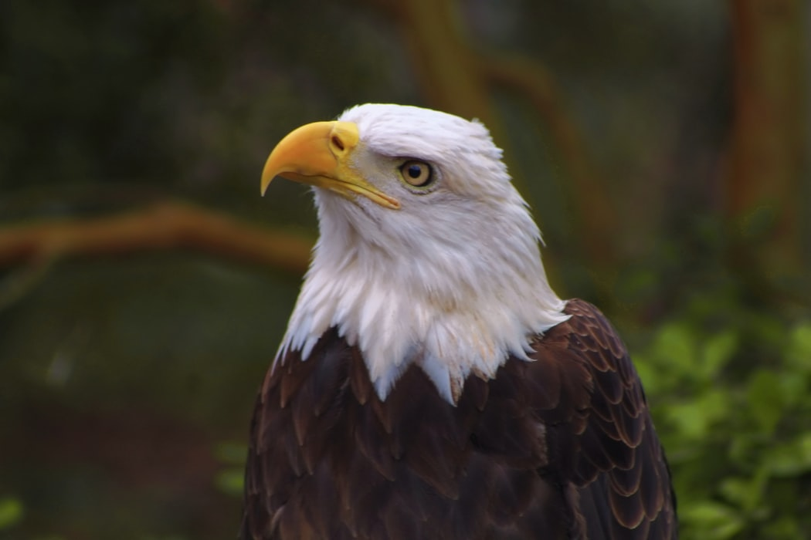
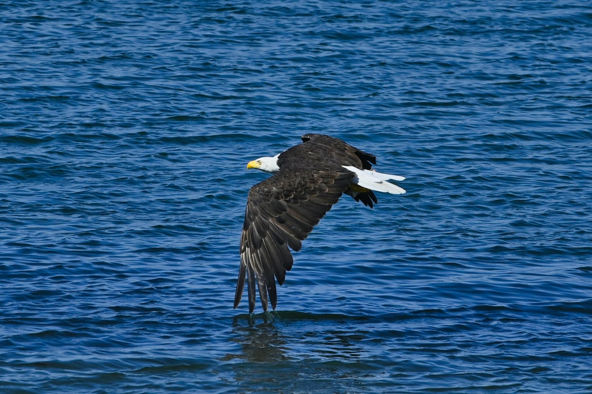
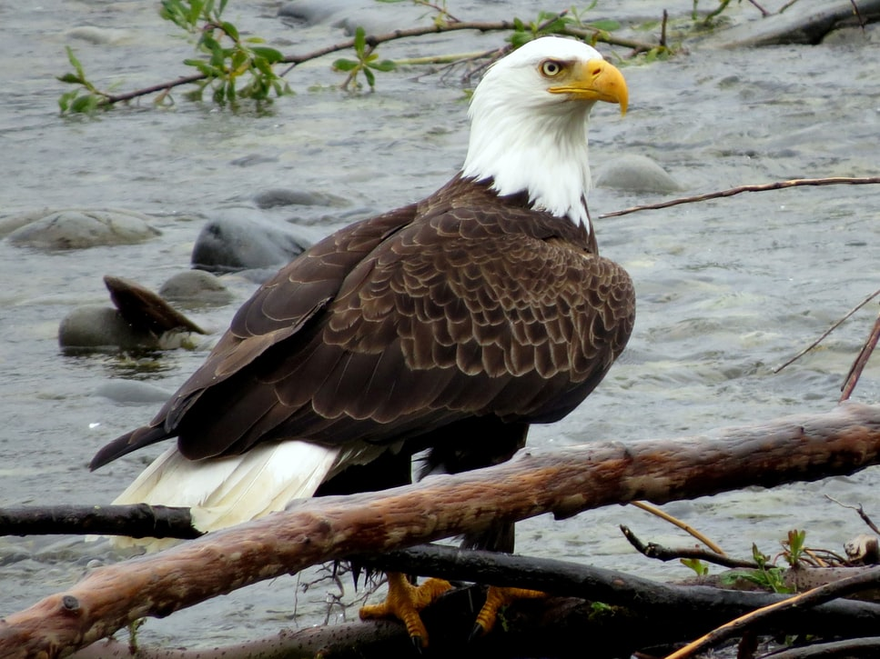

Bald Eagle As Specie
The bald eagle (Haliaeetus leucocephalus) is a North American bird
of prey. It is a sea eagle with two subspecies that form a species
pair with the white-tailed eagle (Haliaeetus albicilla). Its range
encompasses the majority of Canada and Alaska, the whole
contiguous United States, and northern Mexico. It may be found
around vast amounts of open water with enough of food and
old-growth trees for nesting. The bald eagle is an opportunistic
eater that feeds mostly on fish, which it swoops down and catches
with its talons from the water. It has the biggest nest of any
North American bird and the largest tree nests ever documented for
any animal species, measuring up to 4 m (13 ft) deep, 2.5 m (8.2
ft) broad, and weighing 1 metric ton (1.1 short tons). Sexual
maturity is reached between the ages of four and five.


Diet and Habitat
Though their numbers have increased over most of their territory,
bald eagles are still most common in Alaska and Canada. These
strong birds of prey use their talons to fish, but they also
obtain a lot of their food by scavenging carrion or taking other
animals' carcasses. (Such larceny notably spurred Ben Franklin to
argue against the bird's selection as the national emblem of the
United States.) They prefer to live near water and prefer beaches
and lakes with plenty of fish, however they may also capture and
consume small animals.
Breeding
It is thought that bald eagles mate for life. Each year, a pair
builds a gigantic stick nest, one of the largest in the avian
world, high above the earth and cares for a pair of eggs. Immature
eagles are black, and they lack the unique white markings that
allow their parents to be identified until they are around five
years old. Young eagles can travel long distances. Florida birds
have been observed in Michigan, while California eagles have been
reported as far north as Alaska.
